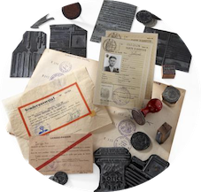

I am an assistant professor of political science at the Collegio Carlo Alberto and the coordinator of the Social and Political Sciences track of the Allievi Honors Program.
I research the dynamics and legacies of extreme forms of violence. Specifically, I am motivated to understand how genocides start, how people try to survive them, and how we remember them. I am a proponent of mixed-methods designs. In my work, I use causal inference, standard statistical methods, and process tracing. Being a polyglot, I also love playing with computational tools. They help me acquire and clean data, e.g., through web scraping, digitising archival collections or analysing large amounts of text. By using these methods alongside social science theories and deep case knowledge I seek to make cross-disciplinary contributions to political science and to history scholarship. Some of my research has appeared or will appear in the American Political Science Review and in the British Journal of Political Science.
Previously, I held a joint position of postdoctoral researcher at the Universidad Carlos III and Juan March Institute. I received my Ph.D. from the European University Institute in December 2022 and master's degrees from the Hertie School of Governance and Universidad Autónoma de Madrid. During my Ph.D. I was a visiting Fulbright researcher at the University of California, Berkeley.
You can find my CV here.
Published Research
-

Allies of the Weak
La Résistance and Jews in the Holocaust
Working Papers
My main working projects ask whether genocidal intention is a necessary criterion for genocide onset and how can we quantitatively measure collective memory.
Teaching
As part of the Social and Political Sciences track of the Allievi Honors Program, I coordinate a course in Advanced Research Design, where I teach classes on instrumental variables and regression discontinuity, as well as a class on archival data collection. Additionally, I teach classes on conflict and state building (in the Tutorials in Social and Political Sciences course) and an introduction to linear regression (in the Applied Statistics for Social and Political Sciences course). Starting in the Spring semester 2025/26, I will additionally teach a field seminar in comparative politics at the University of Turin. Previously, I designed and taught an undergraduate course titled Multidisciplinary Research Design in the Social Sciences.
Data
I have gathered and published data on, i.a., the Holocaust victims, anti-Jewish collaborators, and historical synagogues in France. These and related data are available on my Harvard Dataverse.